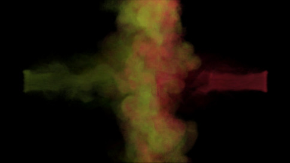
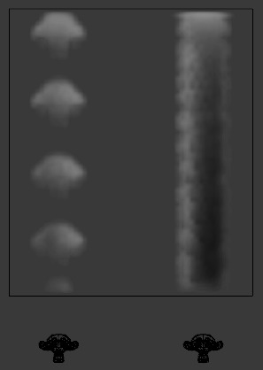

Smoke Flow Object¶
Smoke Flow objects are used to add or remove smoke and fire to a Smoke Domain object.
To define any mesh object as a Smoke Flow object, add smoke physics by clicking Smoke
in . Then select Flow as the Smoke Type.
Now you should have a default smoke flow source object. You can test this by playing the animation
Alt-A from the first frame. If your source object is inside your domain, you should see smoke.
设置¶
Smoke Flow settings.
Flow Type¶
- Fire
- Emit only fire. Note that the domain will automatically create some smoke to simulate smoke left by burnt fuel.
- Smoke
- Emit only smoke.
- Fire + Smoke
- Emit both fire and smoke.
- Outflow
- Remove smoke and fire. Note that the shape of the outflow will use the object’s bounding box.
Flow Source¶
- Source
This setting defines the method used to emit smoke and fire.
- Mesh
Create smoke/fire directly from the object’s mesh. With this option selected there two additional settings, Surface and Volume.
- Surface
- Maximum distance in voxels from the surface of the mesh in which smoke is created (see voxel). Since this setting uses voxels to determine distance, results will vary depending on the domain’s resolution.
- Volume
- Amount of smoke to emit inside the emitter mesh, where 0 is none and 1 is Note that emitting smoke based on volume may have unpredictable results if your mesh is non-manifold.
- Particle System
Create smoke/fire from a particle system on the flow object. Note that only Emitter type particle systems can add smoke. See Particles for information on how to create a particle system.
With this option selected there is a box to select a particle system and one addition setting, Set Size.
- Initial Velocity
When enabled, smoke will inherit the momentum of the flow source.
- Source
- Multiplier for inherited velocity. A value of 1 will emit smoke moving at the same speed as the source.
- Normal
- When using a mesh source, this option controls how much velocity smoke is given along the source’s normal.
Initial Values¶
- Smoke Color
Color of emitted smoke. When smoke of different colors are mixed they will blend together, eventually settling into a new combined color.
- Flame Rate:
Amount of “fuel” being burned per second. Larger values result in larger flames, smaller values result in smaller flames:

例子 showing two fire sources. The object on the left has a Flame Rate of 5, while the one on the right has 0.3.
- Absolute Density
- Maximum density of smoke allowed within range of the source.
- Density
- Amount of smoke to emit at once.
- Temp. Diff.
- Difference between the temperature of emitted smoke and the domain’s ambient temperature. This setting’s effect on smoke depends on the domain’s *Temp. Diff.* setting.
- Sampling
Number of sub-frames used to reduce gaps in emission of smoke from fast-moving sources.
例子 showing two fast moving sources. The object on the left uses 0 subframes, while the one on the right uses 6.
Smoke Flow 高级应用¶
When using a mesh as the Flow Source, you can use these settings to control where on the mesh smoke can be emitted from. These settings have no effect on outflow objects.
- Use 纹理
- When enabled, use the specified texture to control where smoke is emitted.
- Vertex Group
- When set, use the specified Vertex Group to control where smoke is emitted.